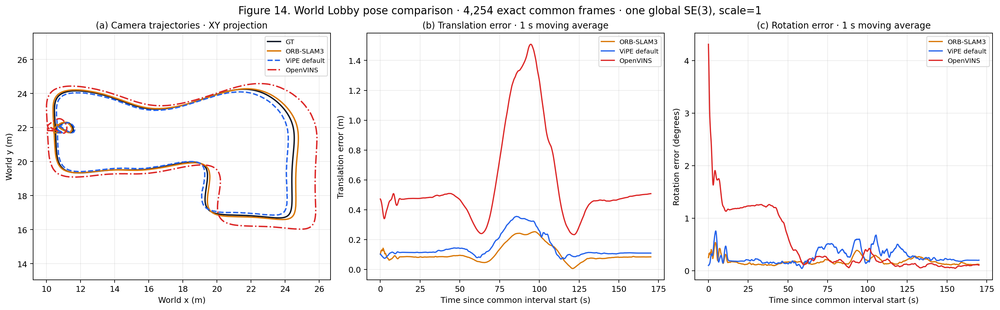
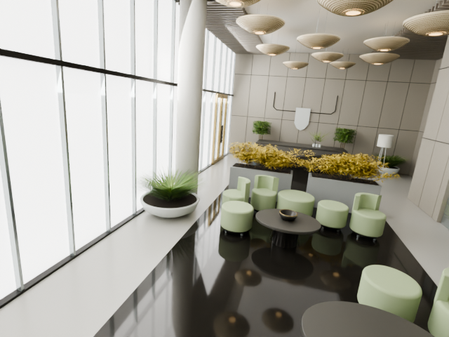
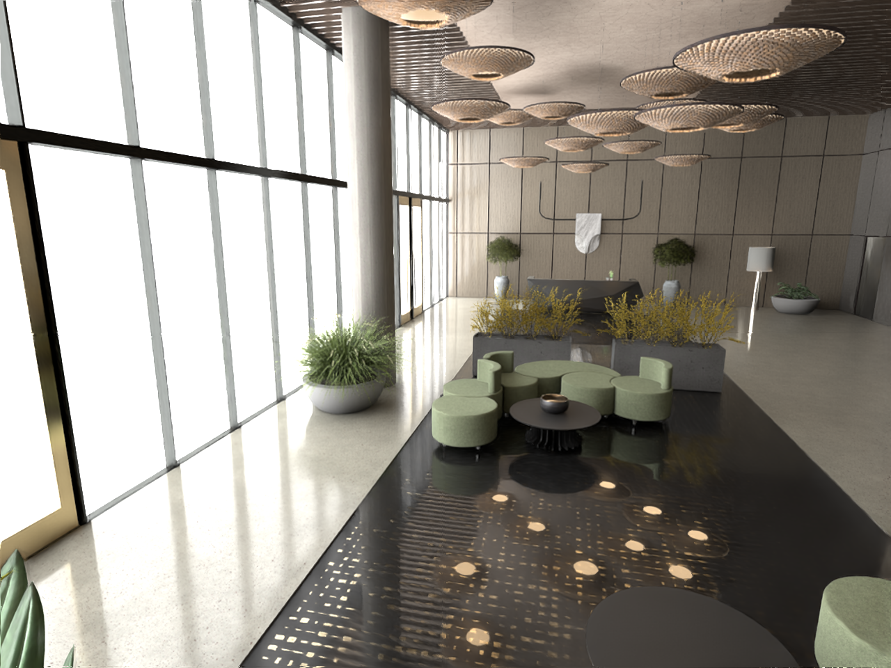
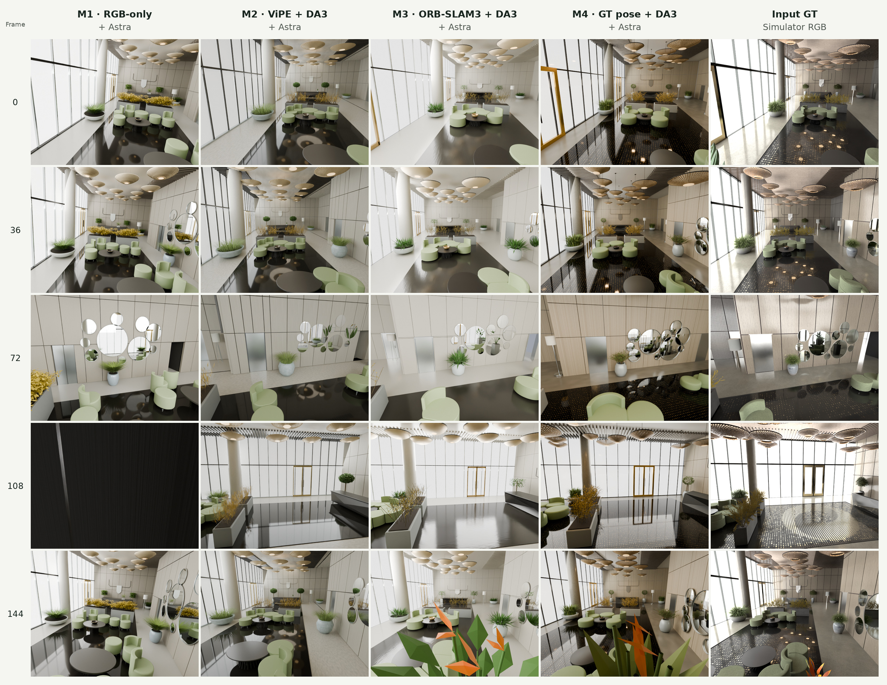
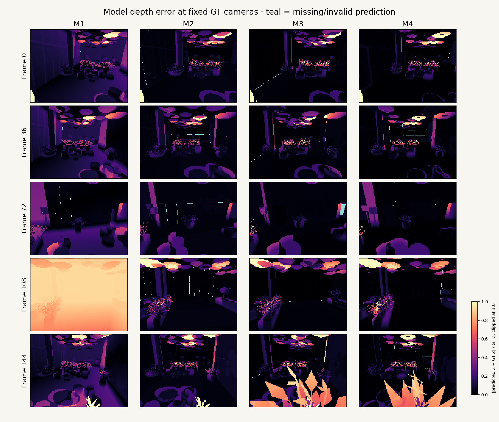

01 / QUESTION
Question & four methods
M4 is strongest overall in this case, but this single-scene study does not establish general superiority.
M1 uses sampled RGB and an unmeasured layout. M2 uses RGB-only ViPE poses and pose-conditioned DA3 depth. M3 uses monocular-inertial ORB-SLAM3 poses and pose-conditioned DA3 depth. M4 uses GT camera poses and pose-conditioned DA3 depth; GT mesh and depth are not modelling inputs.
02 / MEASUREMENT
Pose and native/model depth
Native depth evaluates the upstream pipeline. Model depth ray-casts the final frozen Blender scene.

03 / EDITABLE ASSETS
Editable M1–M4
M4 is revision 4: 74 semantic objects, 37 static AABB colliders, and 180 cameras. The independent reviewer examined revision 2 only. Revisions 3–4 fixed identified issues, but revision 4 has not received a complete independent visual re-review; final visual approval is not claimed.
These display copies and runtime registrations do not alter the frozen models. M1's alignment is diagnostic only.
Rotate, zoom, and inspect the frozen scenes
Scroll here to load the 3D comparison.

M1 / VIEW 0

INPUT / GT RGB

M1 scene.blend ↓ · scene.glb ↓ · manifest ↗
M2 scene.blend ↓ · scene.glb ↓ · manifest ↗
M3 scene.blend ↓ · scene.glb ↓ · manifest ↗
M4 scene.blend ↓ · scene.glb ↓ · manifest ↗
04 / GEOMETRY
Geometry
Bidirectional distances use 100,000 seeded samples per side under the declared global alignment; no mesh ICP is fitted.
05 / APPEARANCE
Appearance
Table 4 uses the five fixed 640×480 checks (0, 36, 72, 108, 144). Table 5 uses one seeded set of 100 views sampled from the other 175 modeling frames. These 100 views are new evaluation views relative to the fixed-five check, but they were still available as modeling RGB inputs. No crop, mask, or per-view fitting is used.
06 / NOVEL VIEWS
Same-scene novel-view depth
Table 6 evaluates model optical-Z on the five fixed reference views. Table 7 uses exactly the same seeded 100-view set as Table 5 and aggregates all GT-valid pixels.

07 / LIMITS & EVIDENCE
Limits & evidence
One synthetic scene and one run per route are insufficient for broad claims.
Tables JSON · Scene manifest · Fixed views · Manifest · SHA256
08 / OFFICE CAFÉ
From a phone walkthrough to an interactive twin
The complete Office Café viewer is embedded below. It retains model-only, scan ↔ model, and source-video ↔ model comparison modes; playback follows all 2,103 solved source-camera poses. The linked shake experiment retains control, gentle, and strong MuJoCo replays.